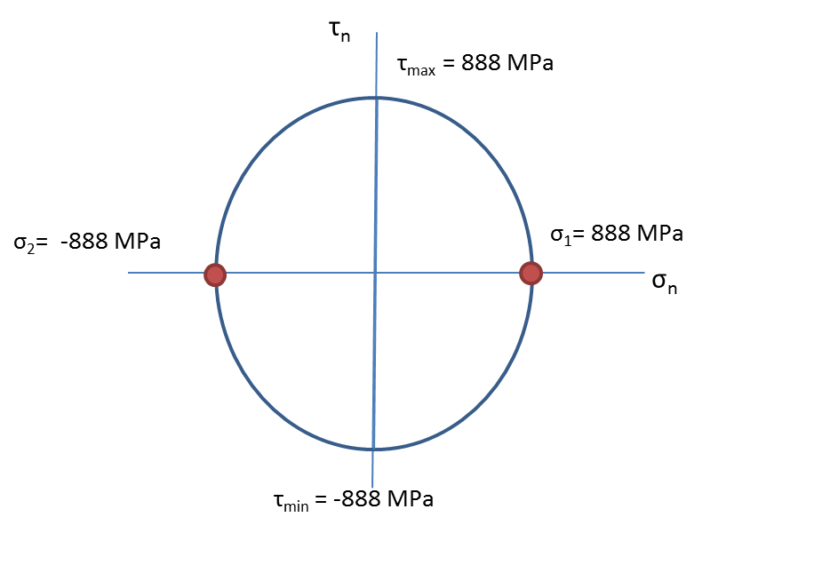

Fatigue Analysis of a Fork Spring on a Suzuki Motorcyle
Situation: Design a telescoping front end
loader to add three additional feet of reach to the Mahindra
5540 4WD tractor arm.
Task: Perform FEA analysis on a new telescoping
boom attachment and propose a final design that can prove to be operable
under maximum loading conditions.
Action: Using Solidworks and Ansys software, finite
element analysis was applied to evaluate the strength, structural
integrity, and geometric stability of the telescoping boom
under the worst case loading conditions.
Result: Proposed a final design with a full
bill of materials after FEA analysis.
Shows the dimensions of the fork spring analyzed.
×
Shows the free body diagram of an axially loaded spring and
the resulting stress diagram of the spring wire. Note: the
worst case stress occurs on the inside of the coil spring.
×

Shows Mohr's circle for the location of the worst case stress
location on the inside of the coil
×
Shows the alternating stress diagram under at the worst case
loading conditions
×
Shows the S-N curve derived for the spring and the worst
case loading condition
×
shows the alternate form of the fatigue diagram with the
current operating point. The plot suggests the life expectancy
of the spring under the current operating conditions to be
560,000 cycles. The margin of safety suggested by the plot
is -0.17.
×
Shows the definition of the safety factor applied to the Modified Goodman Model
for springs. The margin of safety suggested by the plot is -0.17.
×
Shows the stress distribution on the spring and the locations
of the max and min stresses using SOLIDWORKS software. Note:
the resulting max stress is almost identical to the theoretical
calculations.
×